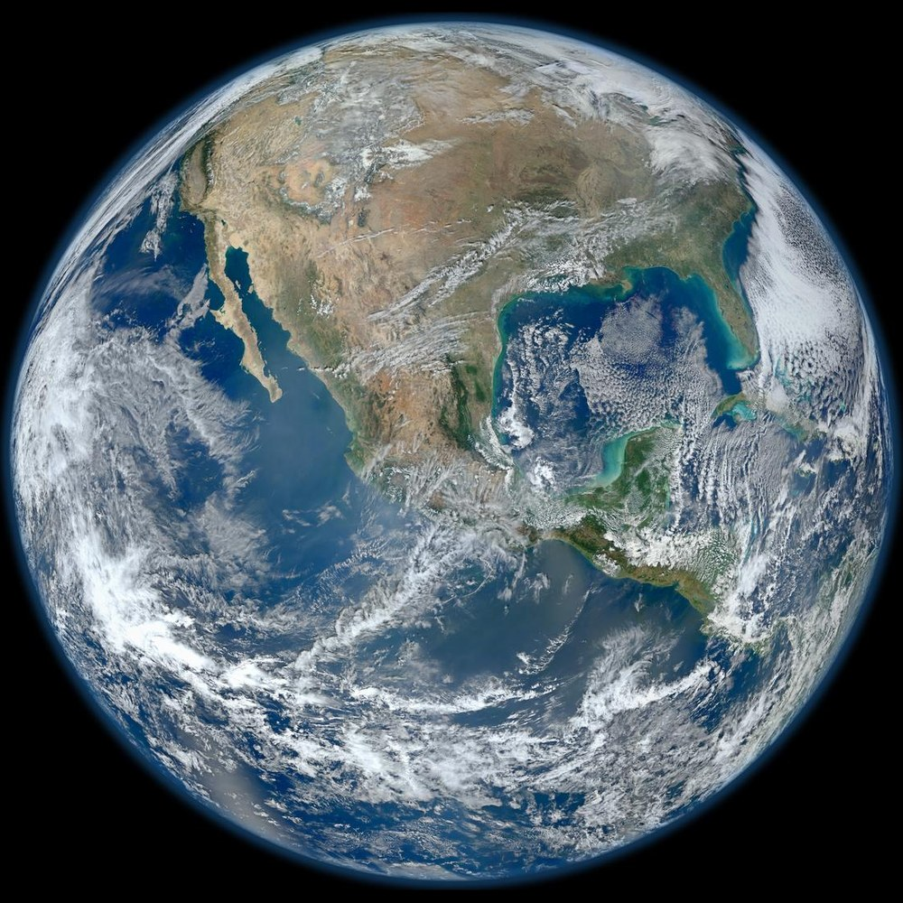

Land, Water & Sky: Earth's Four Spheres
Earth is not a collection of isolated parts. It is a single, self-regulating planetary heat engine where solid ground (Geosphere), liquid waters (Hydrosphere), the gaseous envelope (Atmosphere), and all living beings (Biosphere) continuously exchange matter, heat, and life.
1 · The Living Blue Marble
When Apollo 17 astronauts photographed Earth in 1972, humanity saw our world for the first time as a complete, unified system. The swirling white clouds (atmosphere) float over deep sapphire oceans (hydrosphere) and brown-green continents (geosphere and biosphere).

Geosphere (Land)
The rocky crust, convective silicate mantle, and molten/solid metallic core. Extends 6,371 km from the surface to the center of Earth.
Hydrosphere (Water)
Over 1.38 billion km³ of water. 97% fills ocean basins; 2% locked in glacial ice sheets (cryosphere); 1% in rivers, lakes, and subterranean aquifers.
Atmosphere (Sky)
A protective gaseous blanket of 78% Nitrogen, 21% Oxygen, and trace greenhouse gases regulating surface temperature and shielding harmful radiation.
Biosphere (Life)
All living organisms from oceanic hadal microbes 11 km deep to high-flying raptors. Life acts as a profound chemical shaper of all other spheres.
2 · Planetary Spheres Cross-Section Explorer
Explore the vertical dimensions of Earth's four spheres. Click any sphere tab to inspect its depth, mass, primary chemical elements, and thermal profile.
3 · The Earth Sphere Sorter Lab
Test your systems classification skills! Select an Earth feature chip below, then click on the target sphere bucket where it primarily belongs. Discover how each feature cross-connects with other spheres.
Geosphere
Rock · Minerals · SoilsHydrosphere
Oceans · Ice · RiversAtmosphere
Air · Clouds · WindsBiosphere
Plants · Animals · Fungi4 · Cascading System Feedback Dominoes
Disruptions in one sphere ripple through all others like falling dominoes. Choose a planetary catalyst to trace the multi-sphere chain reaction step by step.
Supervolcano Eruption Chain Reaction
A colossal volcanic explosion releases pressurized magma, sulfur dioxide gas, and millions of tons of pulverized silicate ash into the upper atmosphere.
5 · Earth Systems Mastery Challenge
Test your understanding of Earth's four interacting spheres and their dynamic feedbacks.
Question 1 of 4
When waves crash against coastal cliffs and carve sea arches, which two spheres are directly interacting?
Sphere System Principles
- Closed System for Matter: Practically no rock, water, or air leaves Earth (except hydrogen escape). The same water molecules drunk by dinosaurs are in our oceans today.
- Open System for Energy: Earth continuously receives high-grade solar radiation from the Sun and radiates low-grade infrared heat back out into space.
- The Critical Zone: Life thrives in the thin interface where bedrock meets sunlight, air, and rain. Without the interaction of all four spheres, life as we know it cannot exist.